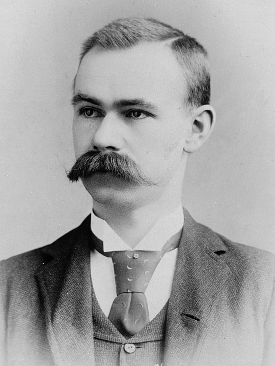

History of Computer (HOC) Website - Herman Hollerith
About Herman Hollerith
Significance in Computer Science
Photo(s) of them / their invention
Any great quote and/or fact
Other pertinent or interesting information
Sources/Links
